What to do today
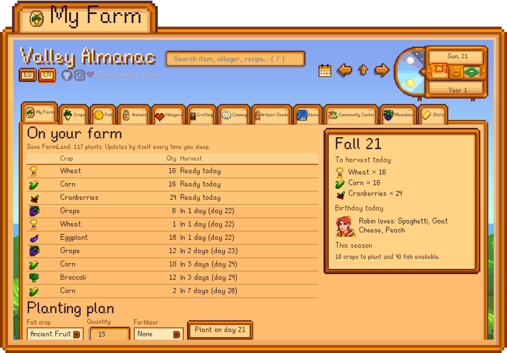
The almanac reads your save every time you sleep: what's ready to harvest, whose birthday it is and what to give them, without having to look it up.
The whole valley in twelve tabs
- My FarmWhat's planted, upcoming harvests and birthdays.
- CropsTable by season and a calculator for seeds, fertilizer and profit.
- FishFilters by season, weather, time and location.
- AnimalsLife cycle, produce and prices.
- VillagersBirthdays, favorite gifts and where they hang out.
- CraftingThe recipes you know, how many you can make and how to learn the rest.
- CookingWhat you can cook now, what suits the season and how to get each recipe.
- Artisan GoodsWhat each machine processes and the best use for what you have.
- ItemsThe game's 2,000+ items (objects, weapons, clothing, hats, furniture…), each with its card.
- Community CenterRooms, bundles and where each item comes from.
- MissablesWhat you'll miss if you don't do it this season.
- StatsIncome, levels and counters from your save.
At the top, a search box for any item, villager, recipe or festival (with where each villager is at the time you pick) and the town calendar to jump to any day. The ES/EN buttons switch the language.
Inside
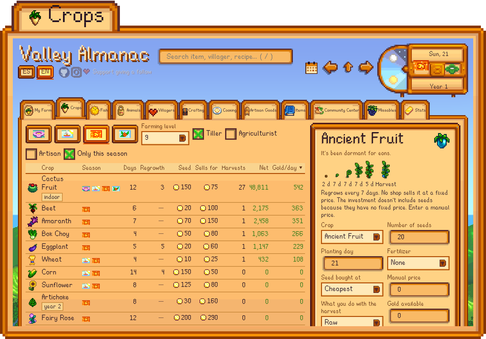
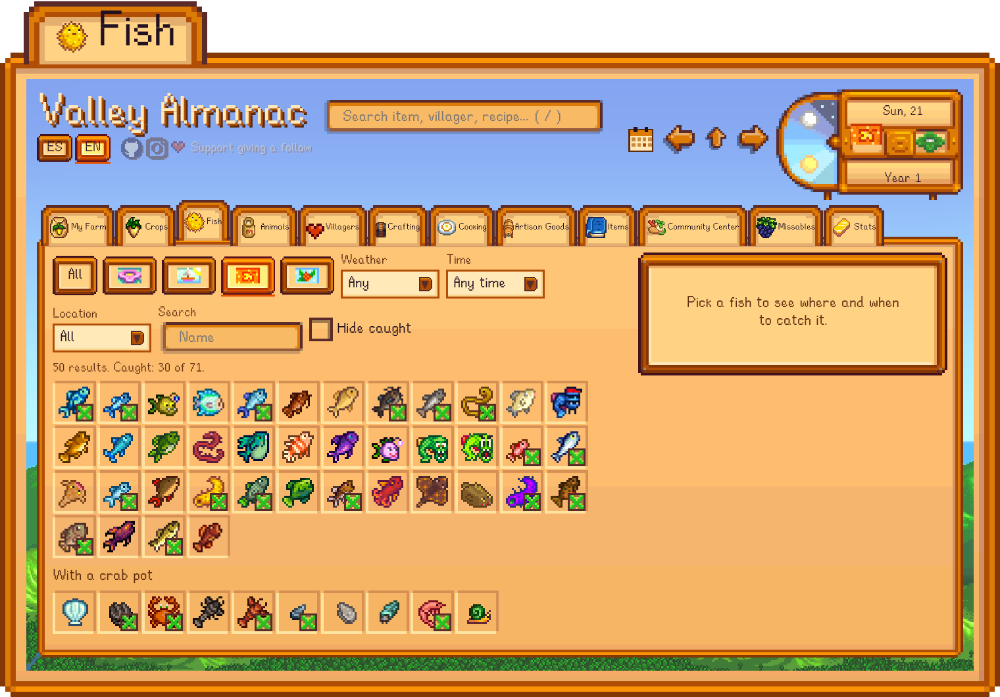
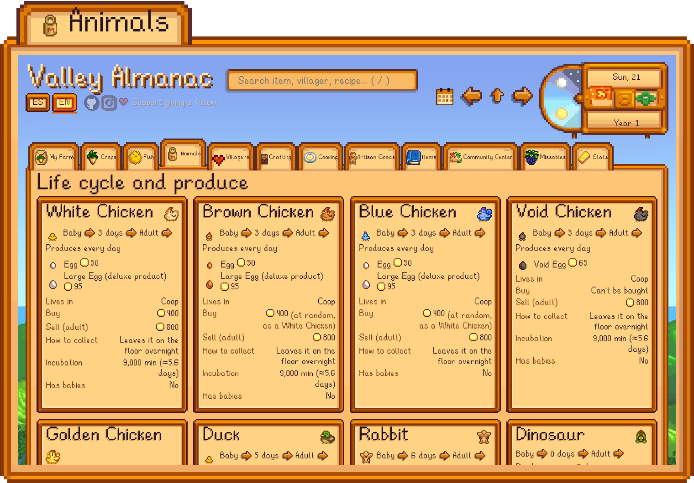
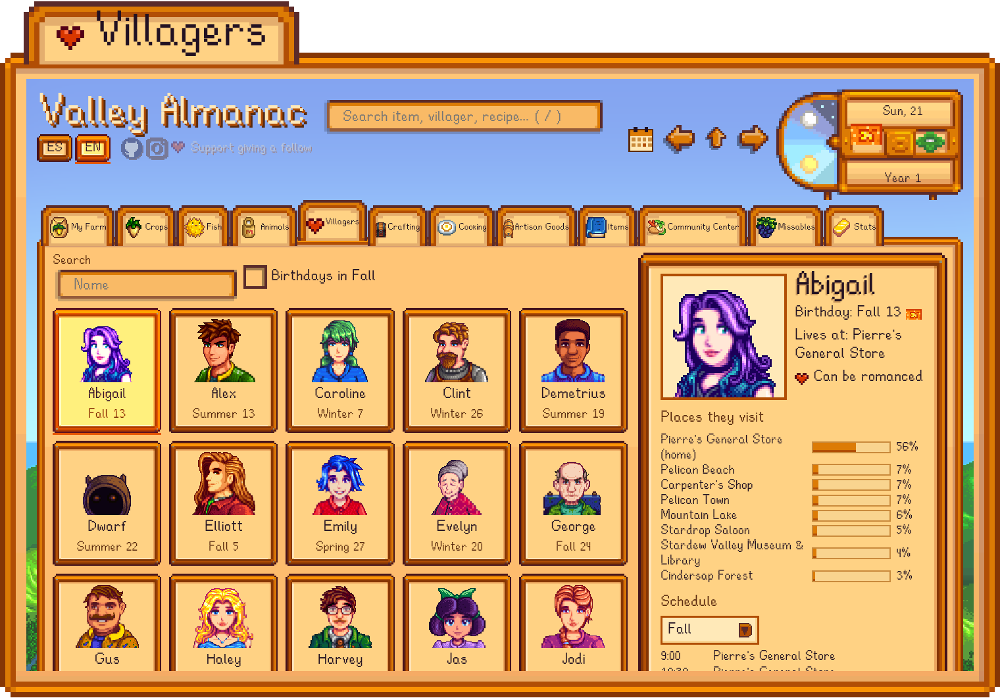
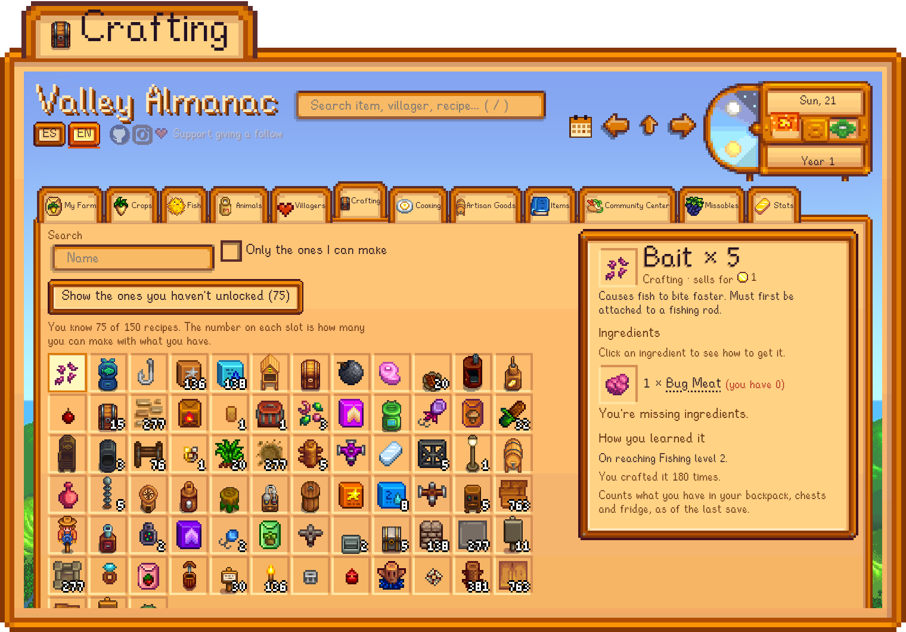
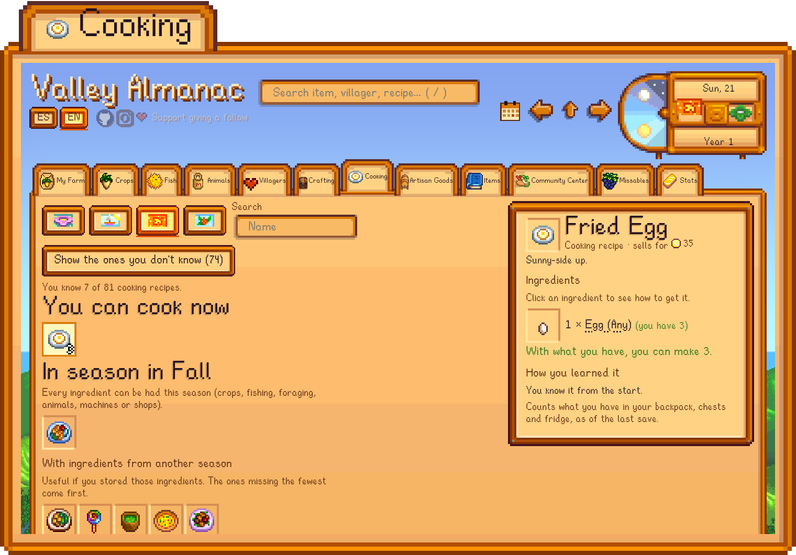
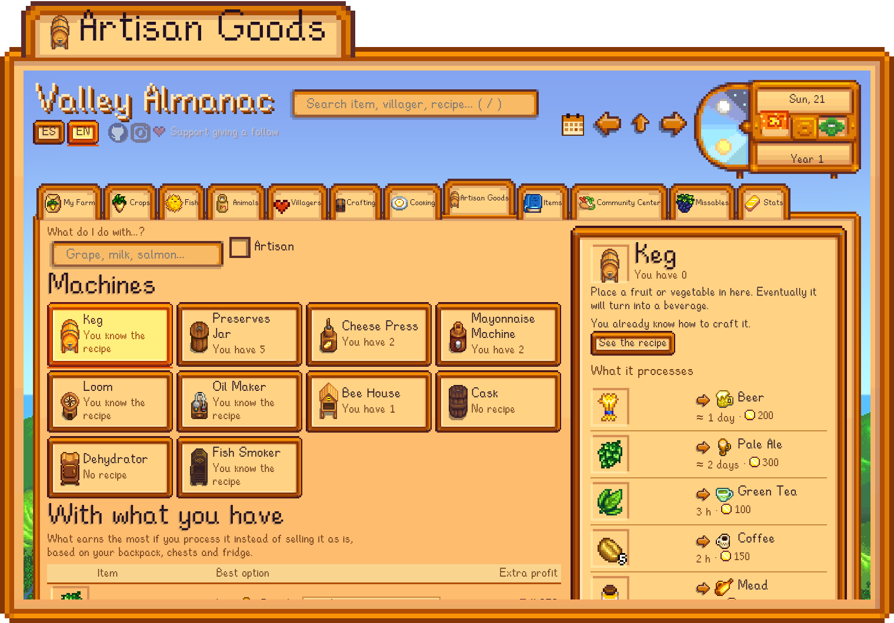
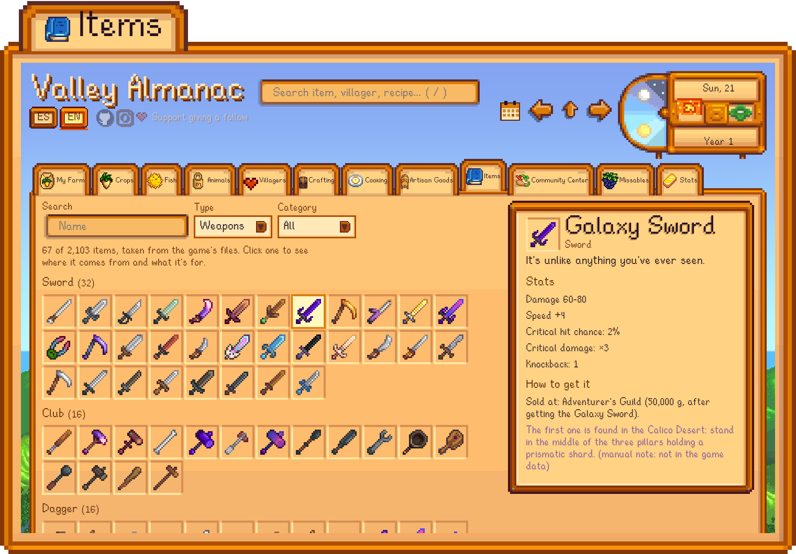
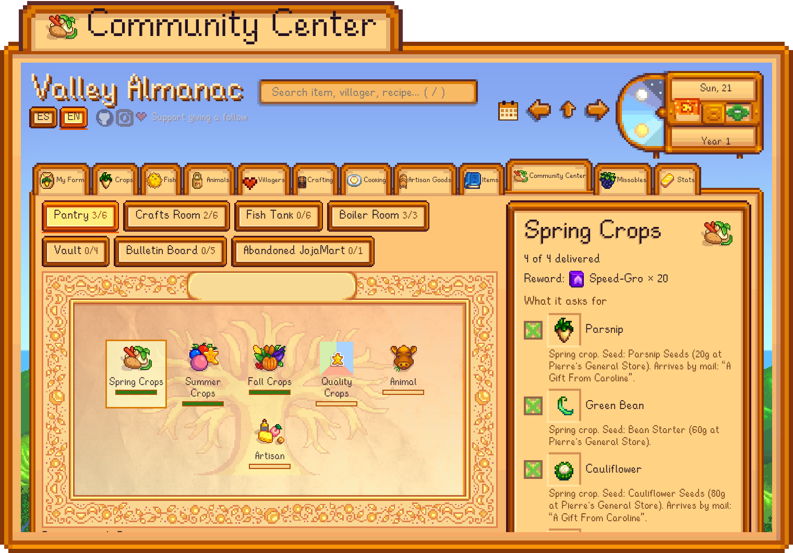
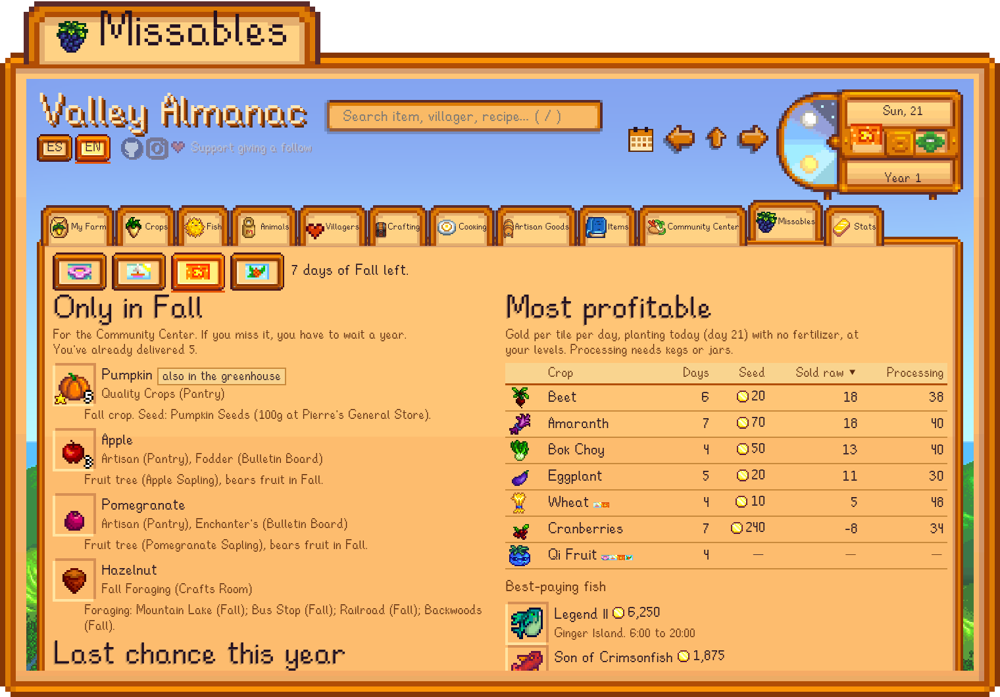
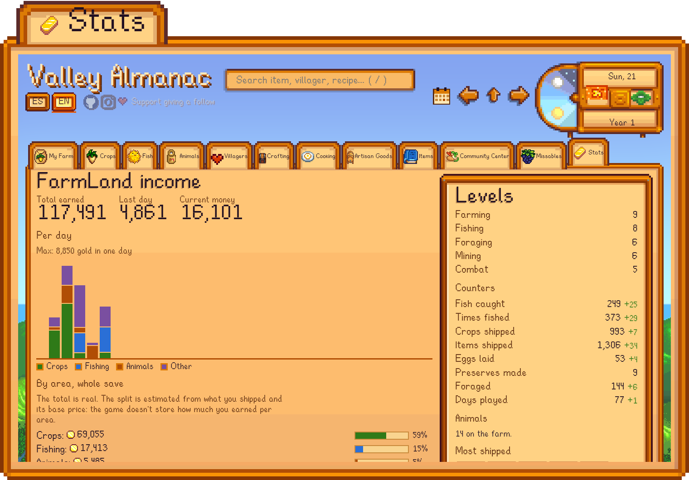
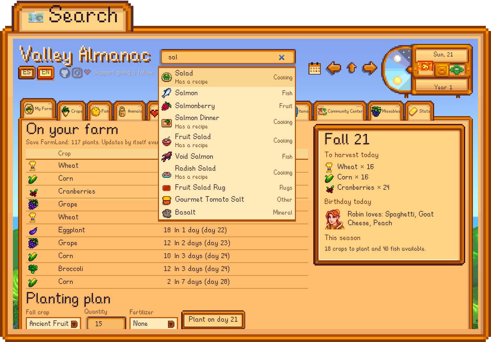
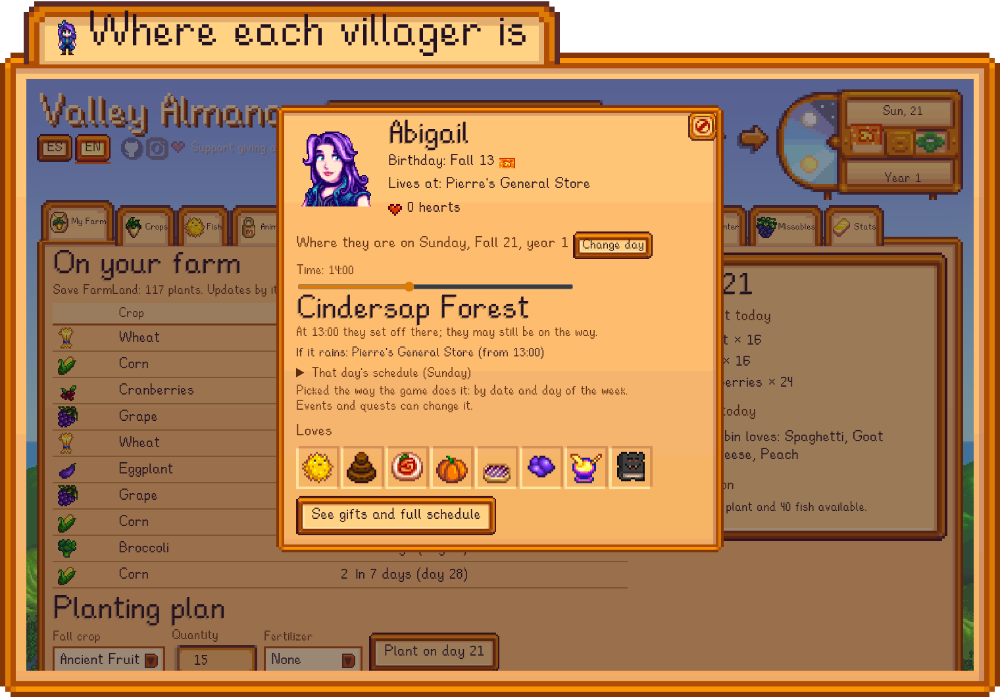
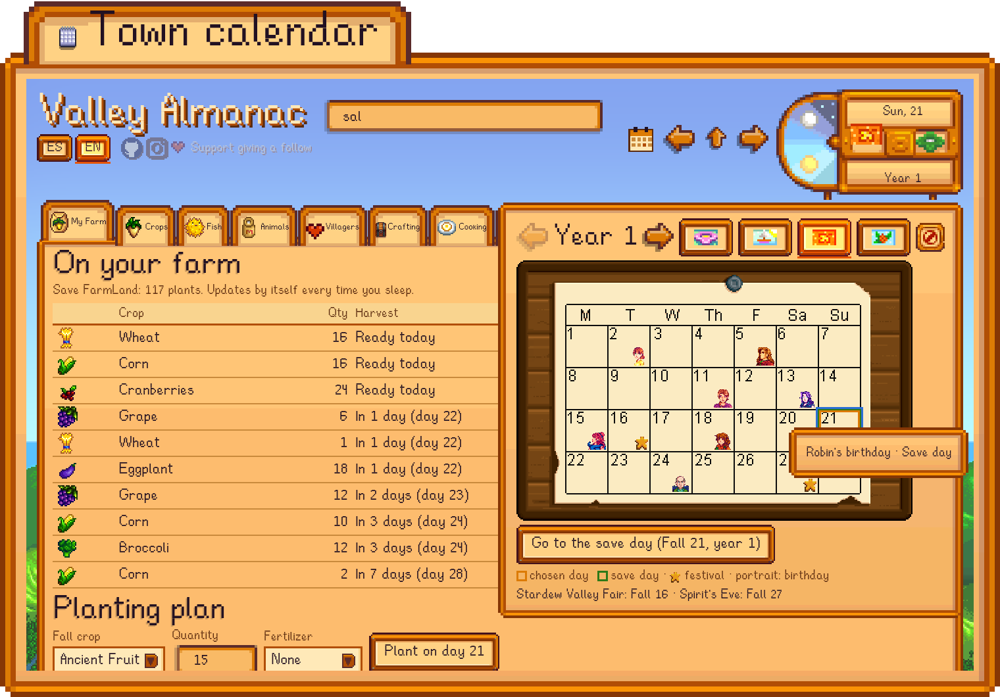
Install
You need Stardew Valley installed (Steam or GOG). The installer builds the wiki from your own copy of the game.
Windows
Unzip it and double-click instalar.bat. If Python or Node.js is missing, it installs them with winget.
macOS
Unzip it, move the folder out of Downloads and double-click instalar.command. If Node.js is missing, it installs it with Homebrew.
Linux
With Python 3.9+ and Node.js 22.7+:
git clone https://github.com/GonViv05/valley-almanac.git cd valley-almanac sh instalar.sh
Your saves are only read. It's not a mod and doesn't need SMAPI.